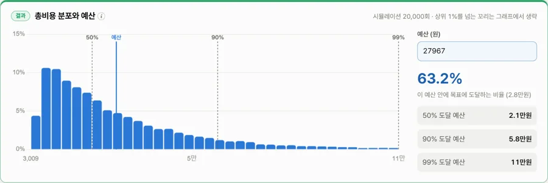
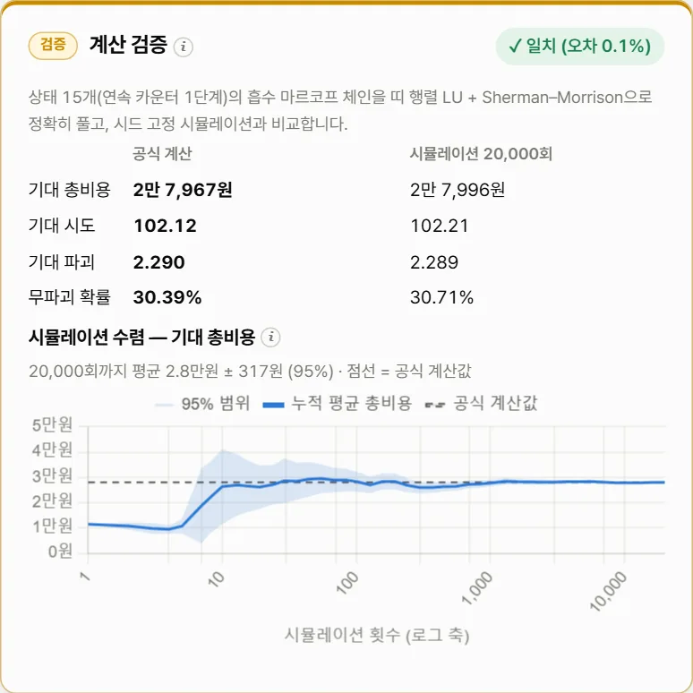
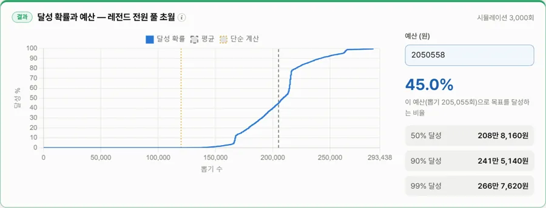
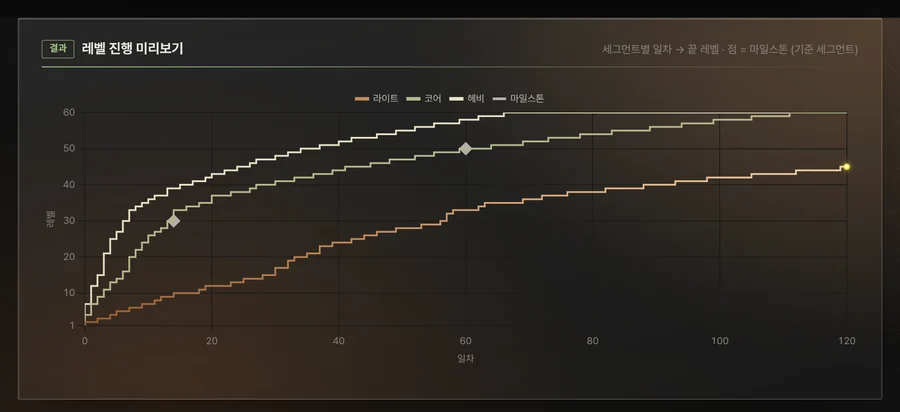
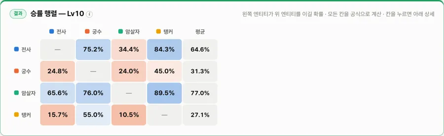
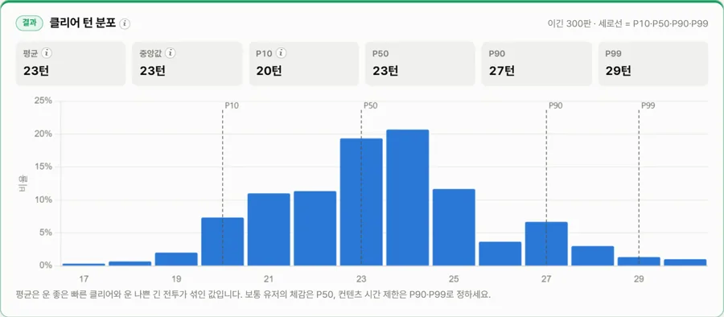
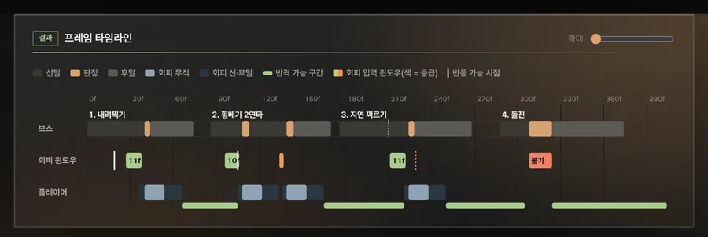

강화·가챠·성장·전투 밸런스를 몬테카를로 시뮬레이션과 마르코프 체인으로 계산해요. 평균뿐 아니라 운 나쁜 1%가 얼마를 쓰는지, 공식과 시뮬레이션이 서로 맞는지까지 브라우저에서 바로 확인합니다.
41초 소개 영상 · 기본 템플릿 값
같은 질문을 공식 계산(오차 없는 정답)과 시뮬레이션(분포 전체)으로 동시에 풀고, 두 결과가 맞는지 스스로 검증합니다.
카드를 누르면 그 도구가 기본 템플릿으로 열려요. 그림 속 숫자는 모두 기본 템플릿 값입니다.
단계별 성공·유지·하락·파괴 확률과 비용으로 +15까지 총비용 분포. 보조 아이템 최적 사용과 가격 곡선, 목표 비용 역산.
평균 2만 7,967원 · 운 나쁜 1% 10만 9,980원
마르코프 체인 정답과 시뮬레이션 2만 회 평균이 95% 범위 안에서 맞는지.
오차 0.1% 일치
천장·픽업 보장·마일리지까지 넣은 달성 확률과 예산, 확률 공시표.
단순 12만 회 → 실제 평균 20.5만 회
레벨 곡선과 공급원으로 일차별 레벨 진행, 수식이 살아 있는 .xlsx 내보내기.
마일스톤 맞춤 base 자동 풀이
규칙 수식으로 레벨별 CP와 1:1 승률 정확해, 승률 행렬과 민감도.
CP와 실제 강함 상관 0.80
데이터 테이블 기반 파티 vs 보스, 턴제·실시간, 기여도·교체 비교.
보스전 300판 · 평균 23.4턴
보스 연계의 선딜·판정·후딜과 회피 무적으로 반응·암기·반격 판정, PPT 내보내기.
회피 윈도우 자동 판정
탭별 핵심 지표와 목표 통과·미달을 한 장으로. 엑셀 전투 시트의 ID 참조 검증.
회의 직전 5분 정리설치 없이, 지금 브라우저에서.